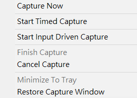
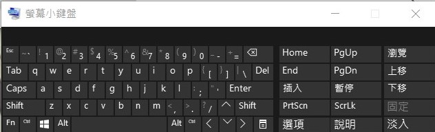

NX12 <<
Previous Next >> 輔助小工具
Wink
安裝流程
上網搜尋"debugmode wink"
點選官方網站進行下載(https://www.debugmode.com/wink/)
不安裝，按右鍵找到7-zip，解壓縮
接著把初始檔名改成"wink"後，放入data或隨身碟裡
點開檔案，於$R0內找到啟動檔即可使用
使用教學
老師建議每部影片五分鐘即可，容量不可太大
新建一個檔案，左上角File裡的New
錄製時是使用全螢幕，錄製完後再依照視窗調整大小
擷取螢幕:Pause
定時擷取:Shift+Pause
輸入驅動的擷取:Alt+Pause
按"ok"後跳轉至下一頁，再按左下角的"Minimize To Tray"
程式會縮進右下角的系統列中，找到圖示按右鍵，點選"Restore Capture Windows"，即可再次開啟視窗。
1.系統列
右下角系統列點開可找到wink的圖示，點擊右鍵

"Capture Now"是擷取單張的圖
"Start Timed Capture"則是錄製，整理進程式後會變成很多單張的圖讓你進行編輯
在錄製結束時記得按"Finish Capture"，才會進入wink的編輯介面
2.內建小鍵盤(純粹小想法，這個方法其實還是需要點開wink圖示，所以還是乖乖用滑鼠就好)
筆記型電腦的鍵盤沒有pause按鍵，對沒有外接鍵盤的同學較不友善，不過我們可以使用電腦本身內建的"螢幕小鍵盤"
左下角的搜尋處輸入"OSK"即可搜尋到，點開後即可使用
縮到最小後放在你認為不會擋路的地方(選字時它會擋住你的選字列，就連你打開右下角系統列時也會被小鍵盤擋住)
我們需要的就是小鍵盤區域的"暫停"鍵(外接鍵盤則是於鍵盤右上角，有個Pause Break鍵)

NX12 <<
Previous Next >> 輔助小工具